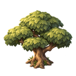
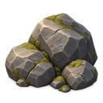
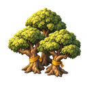
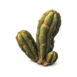
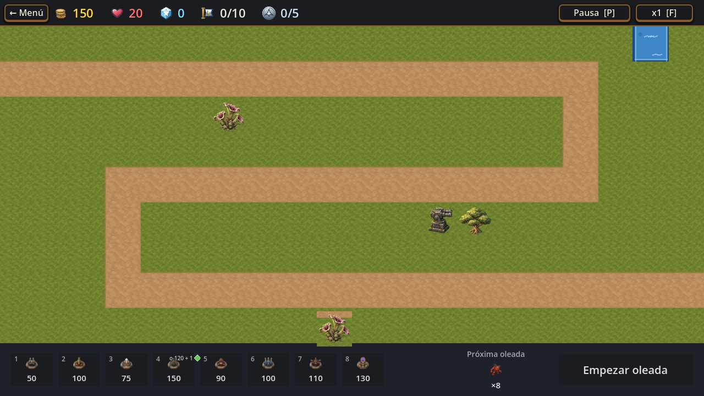

Monsters & Canons · Cántaro · T540
Flora alienígena,
con el acabado vigente
Tres direcciones nuevas para reemplazar las flores actuales de los niveles 1, 3, 4 y 5. Esta revisión parte de la decoración pintada y dimensional que ya usa el juego.
Muestras de concepto pendientes de tu decisión. Ninguna está aprobada ni integrada. Las vistas de nivel son montajes hechos sobre una captura real, no capturas del juego con estos assets.
La familia visual actual
Antes de diseñar, contrasté el acabado con estos recursos activos y con la captura vigente del nivel 1.

Árbol · volumen pintado
Roca · material facetado
Bosque · luz superior izquierda
Cactus M79 · PNG renderizadoTres direcciones
Los originales generados y los PNG de revisión de 128×128 están disponibles en las carpetas de esta galería.
Dirección A
Trompetas enrolladas
Corolas carnosas con interior malva y una base vegetal compacta. La forma abierta la separa de una flor terrestre común.
CasillaMapa

Montaje sobre captura real del nivel 1; escala contextual aproximada.
Dirección B
Cápsulas plegadas
Tres vainas de altura desigual, con coronas plegadas y tallos cortos. Silueta vertical y lectura de planta extraña.
CasillaMapa
Montaje sobre captura real del nivel 1; escala contextual aproximada.
Dirección C
Roseta baja
Hojas gruesas que se curvan y un capullo lateral. Perfil bajo para una presencia más discreta sobre la pradera.
CasillaMapa
Montaje sobre captura real del nivel 1; escala contextual aproximada.
¿Cuál dirección querés seguir?
Podés elegir A, B o C; pedir ajustes a una variante o descartar las tres. La elección acá solo define la siguiente ronda de muestras; todavía no habilita integrar arte.